INTRODUZIONE
l’obiettivo principale dell’industria dei computer è sempre stata quella di voler aumentare le performance, in passato si faceva aumentando il clock ma poi divenne impossibile per un limite fisico ovvero che un segnale non può essere più veloce della velocità della luce e per problemi di gestione delle temperature. un computer con un clock a deve essere più piccolo di 100 per dare abbastanza spazio al singolo ciclo di clock è fattibile ma ci sono comunque limiti strutturali di dissipazione del calore una soluzione a questo problema é l’architettura parallela ovvero più CPU che collaborano per il medesimo obiettivo
Classificazione di Flynn
ci permette di classificare i tipi di architetture in base a flusso di istruzioni e flusso di dati 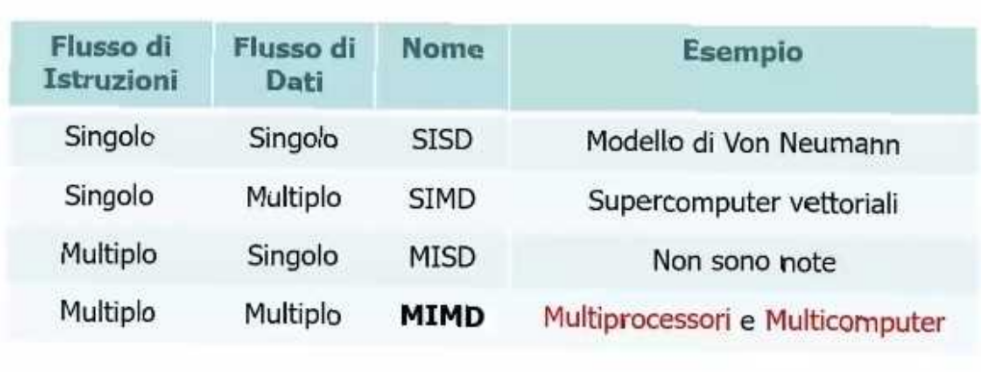
Classificazione dei calcolatori
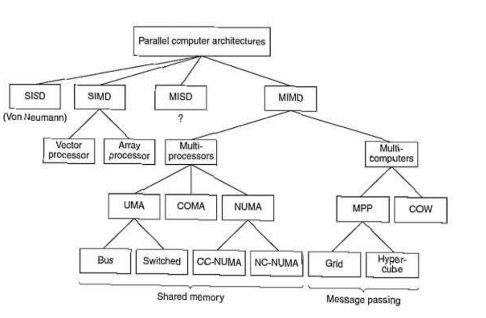
ARCHITETTURE PER IL CALCOLO PARALLELO
Il parallelismo aiuta appunto a migliorare le performance con tecnologie come il pipelining e le architetture superscalari si può arrivare ad un miglioramento dal 5 al 10.
Con più CPU si arriva a un miglioramento addirittura dal 50 al 100% esistono tre approcci riguardo queste architetture:
- Data parallel computers(SIMD)
- Multiprocessors(MIMD)
- Multicomputers(MIMD)
Le varie architetture
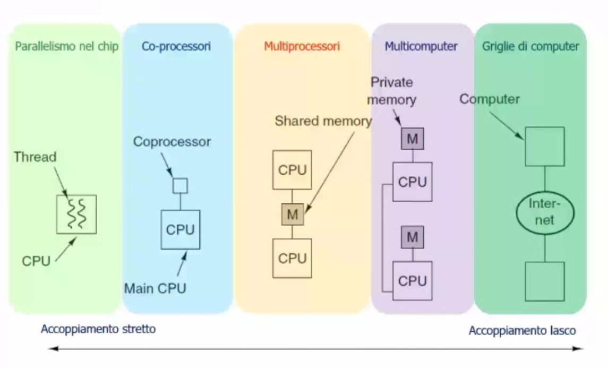
Parallelismo nel chip
Può avvenire in 3 modi:
parallelismo a livello di istruzioni
mettere più istruzioni per ogni ciclo di clock con due tipi di processori: Superscalari: con pipeline e unità funzionali parallele 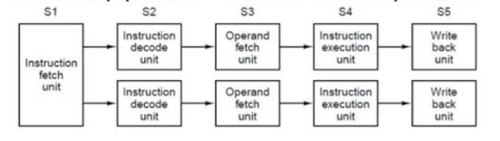 Processori VLIW con istruzioni lunghe che dividono il problema nelle varie componenti 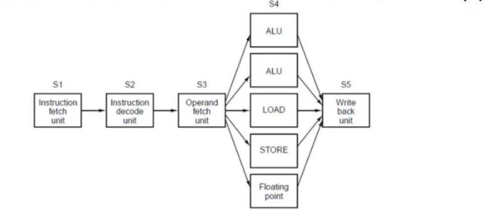
prima di iniziare il prossimo argomento farei uno specchietto che spiega cosa è il thread
Cosa è il Thread?
Il Thread è un’unità più piccola del processo che può essere eseguita indipendentemente e in modo concorrenziale
Multithreading nel chip
risolve un problema di stallo della pipeline, ovvero quando una CPU tenta di accedere ad una informazione in memoria e non nella cache e perciò per accedervi ha bisogno di tempo per caricarla prima di riprendere l’esecuzione. come funziona lo stallo nella pipeline nello specifico: facciamo finta di avere una CPU con una istruzione per ciclo di clock divisa a sua volta in 3 piccoli thread A,B e C che durante il primo ciclo si chiamano A1,B1,C1 A2 nel secondo ciclo di clock ha bisogno di una info che non è nella cache quindi entra in stallo e deve attendere 2 cicli prima di recuperarlo. 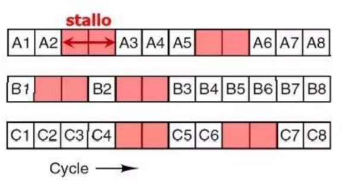 le soluzioni come già detto sono attraverso il multithreading il multithreading si divide in 3 approcci:
- a grana fine
- a grana grossa
- di tipo simultaneo
A GRANA FINE
Le istruzioni dei singoli Thread sono eseguite a turno in un ciclo di clock in quei due ipotetici cicli di stallo di una singola istruzione vengono eseguite le altre istruzioni ogni thread ha i suoi registri e la quantità dei thread viene definita in fase di progettazione del chip le situazioni di stallo non avvengono solo per situazioni di memoria ma anche altre 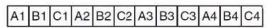
A GRANA GROSSA
In quelli a grana grossa i thread vengono eseguiti fino al verificarsi di uno stallo, ogni volta che si verifica uno stallo viene perso un ciclo e si passa ad un thread successivo richiede meno thread per mantenere occupata la CPU ed è meno efficiente rispetto a quello a grana fine 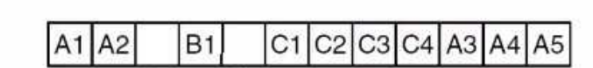
TIPO SIMULTANEO richiede Multithreading in CPU superscalari
le cpu hanno più unità(componenti) in parallelo quindi più pipeline solo che c’è un limite fisico di componenti e di dimensioni per cui la seguente tipologia non si può migliorare 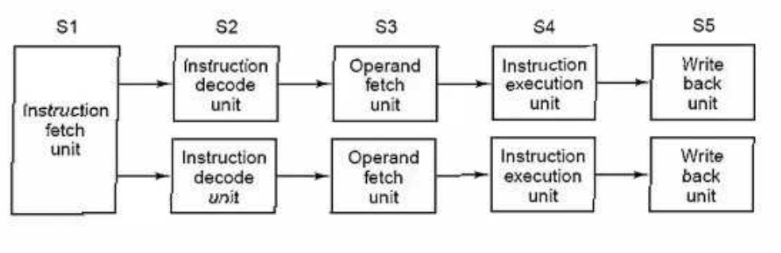
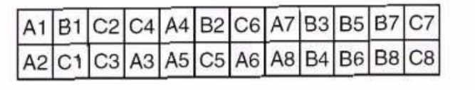 Ciascun thread emette due istruzioni per ciclo fintanto che può, altrimenti, non appena raggiunge uno stallo, viene emessa immediatamente un’istruzione del thread che segue affinché la CPU resti pienamente impegnata. immagina che nella foto ci siano degli stalli ma che vengono subito riempiti da altri thread
MULTIPROCESSORI IN UN SOLO CHIP
Con il passare degli anni i transistor sono diventati sempre più piccoli ed è stato possibile aumentare il loro numero all’interno di un chip. il clock non venne aumentato per i soliti motivi per tale ragione le industrie inserirono più CPU(core) dentro lo stesso chip(die) i multiprocessori si dividono in 2: OMOGENEI condividono stessa cache di primo e secondo livello e la memoria principale si dividono in altre due sotto categorie caratterizzate da due tecnologie differenti: 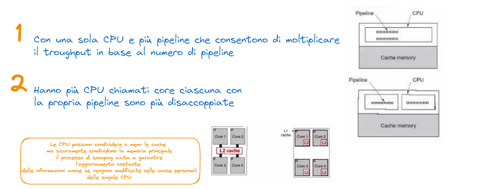 ETEROGENEI in quelli eterogenei ogni core ha uno specifico compito come ad esempio decoder, audio/video, cripto-processore e interfacce di rete. vengono dette system on a chip sfruttare questi chip prevede l’uso di algoritmi che hanno un uso in parallelo e sono molto complessi da realizzare per i chip multicore per farli comunicare tra loro viene usato un bus ma per i sistemi più grandi ne serve più di uno o ad anello, l’anello è un sistema che fa comunicare i core tutti insieme collegandoli due a due formando un anello per poter trasmettere dei dati da core a core si usa un token che viene preso dalla singola cpu, quando lo prende può trasferire le informazioni e una volta riposto il token qualche altra cpu può prenderlo(tipo gioco delle sedie) il bus è frutto dell’interconnessione delle cpu quindi una cpu può passare le informazioni tra le cpu
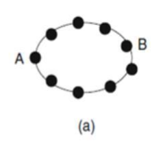
Chip-level multiprocessor
Sono come dei multiprocessori ma più piccoli. Per quanto riguarda la progettazione software di essi non è così differente dai multiprocessori a bus. al posto di avere una cache per ogni CPU hanno delle cache in comune che però possono essere saturate. rispetto ai normali multiprocessori questi chip sono meno tolleranti ai malfunzionamenti (esempio di malfunzionamento:while all’infinito che si interrompe)
Co-processori
Sono processori che collaborano e che svolgono specifiche funzioni permettono il miglioramento del processore perchè si prendono il compito di svolgere quelle determinate funzioni ci sono diversi tipi di co processori:
- grafici
- rete
- crittoprocessori
MIMD
presa dalla classificazione di flyn sono i processori che lavorano con multiple istruzioni e dati multipli ci sono 3 tipi di MIMD:
1. MULTIPROCESSORI
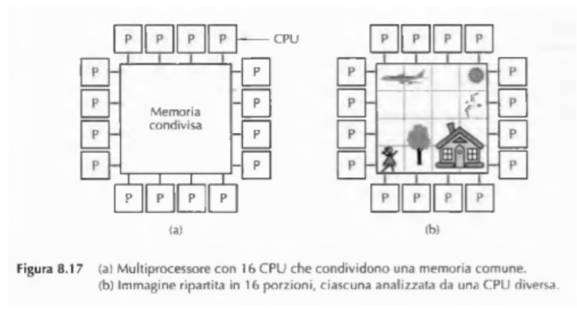 hanno una memoria condivisa e grazie a questo non serve installare un sistema operativo per ogni CPU, inoltre può esserci una sola CPU che si occupa degli scambi I/O(multiprocessore asimmetrico) esistono due altri tipi di multiprocessori
- UMA(quando le parole vengono lette in memoria sempre alla stessa velocità Uniform Memory Access)
- NUMA(Non Uniform Memory Access) approfondiamo un attimo gli UMA. si dividono in 5 tipi:
ARCHITETTURA UMA BASATI SU BUS Questi processori lavorano su un singolo bus per collegarsi alla shared memory, per evitare intoppi è sconsigliato l’utilizzo di troppe CPU 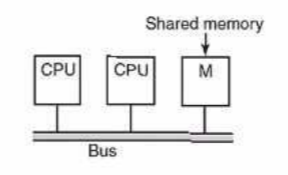
UMA CON SINGOLO BUS E CACHE NELLA CPU ogni CPU ha una sua piccola cache, oltre alla shared memory così facendo si riducono dei tempi di attesa possono essere read only o READ/WRITE 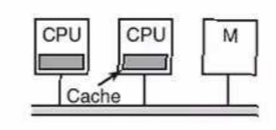
UMA CON SINGOLO BUS E CPU DI RAM le CPU oltre ad avere una cache(che ha poca memoria) hanno anche una ram dedicata(memoria privata) la shared memory serve viene usata solo per salvare le variabili globali a questo punto il compilatore deve spezzettare per bene il progetto per far si che venga gestito bene dalle varie CPU per scindere le variabili globali e locali
UMA CON CROSSBAR SWITCH Utilizzare un solo bus è un limite soprattutto su sistemi con più di 64 CPU per fare più parallelismi si usa la crossbar switch è composta da un circuito chiamato commutatore è una griglia che instrada il segnale azionando e spegnendo i vari connettori nella foto se c’è il pallino nero significa che ad esempio 000 sta comunicando con 010 come una sorta di matrice/battaglia navale se la porta è chiusa significa che il collegamento si instraderà lì alla CPU non verrà mai negata una connessione di cui ha bisogno perché si calcola il percorso migliore in qualsiasi momento una CPU può comunicare con una memoria, l’importante è che non ci sia una sovrapposizione altrimenti, darebbe gli stessi problemi del bus singolo(tipo 100 che prova a parlare con la memoria 000 anche se 010 già ci sta parlando) un altro problema è il numero esagerato di incroci che bisogna fare in base al numero di memorie e di CPU che va in funzione di dove n è il numero dei CPU e delle memorie 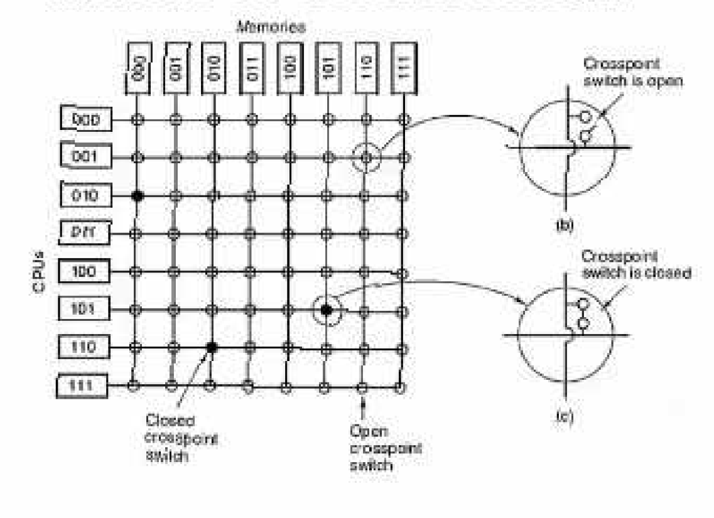
UMA CON RETE DI COMMUTAZIONI I A PIÙ STADI a quello precedente c’era un commutatore per ogni collegamento ora con questo a rete a più stadi c’è un collegamento che prevede 2 input e 2 output per ogni commutatore ciò comporta un ottimizzazione del numero di commutatori. ogni messaggio che viene scambiato tra i commutatori è composto da
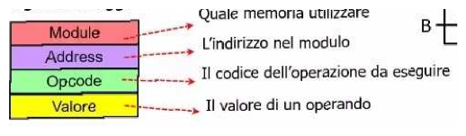
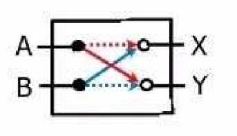
Per n CPU e x memorie un esempio è la rete omega
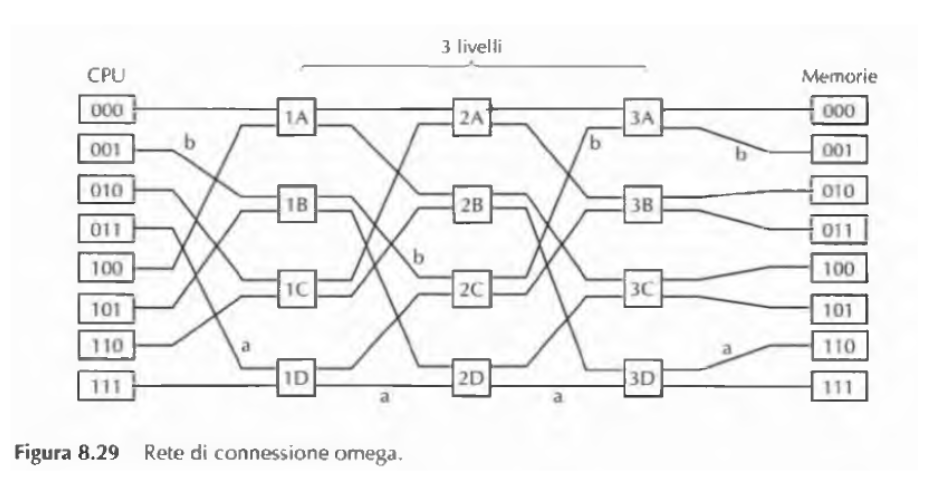
il funzionamento dell’indirizzamento avviene attraverso lo shuffle perfetto, i bit della memoria corrispondono al percorso da fare dove 0 sta per sali al commutatore e invece 1 sta per scendi
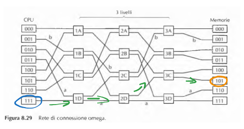
non tutte le CPU possono lavorare contemporaneamente ad esempio 000 deve usare per forza 1A e anche 100, insieme non possono lavorare perché usano gli stessi commutatori tutto ciò si basa su un sistema interlacciato che tenta di ridurre al minimo al congestione, ovvero i percorsi minimi
APPROFONDIMENTO SUI MULTIPROCESSORI NUMA per connettere più CPU insieme superando i limiti dei sistemi UMA entra in gioco NUMA ovvero Non Uniform Memory Access, quindi memorie che hanno tempo di accesso non uniforme le macchine NUMA hanno:
- un unico spazio di indirizzamento(TUTTO LO STACK degli indirizzamenti) che è visibile a tutte le cpu
- per accedere a una memoria remota(lontana) usano istruzioni di LOAD e STORE
- più la memoria è lontana(remota) e più ci sarà un accesso lento se invece è locale l’accesso sarà veloce Ci sono due tipi di macchine NUMA: NC-NUMA(No Cache Non Uniform Access) ogni processore ha accesso diretto alla memoria principale del sistema ma non ha la cache il tempo di accesso è noto CC-NUMA(Cache Coerent Non Uniform Memory Access) sono basati sulle directory-based multiprocessor e prevedono delle cache così da ridurre i tempi di accesso ma ovviamente prevede l’uso di snooping con un database che tiene conto degli stati e degli indirizzi
2.MULTICOMPUTER
Il secondo progetto di architettura parallela prevede per ogni CPU una memoria privata, cioè accessibile solo da essa e non dalle altre tramite semplici istruzioni LOAD e STORE, ma cui nessun altra CPU può accedere. Programmare un multicomputer è molto più difficile che programmare un multiprocessore. D’altra parte i multicomputer grandi sono molto più semplici ed economici da costruire rispetto a multiprocessori con lo stesso numero di CPU. 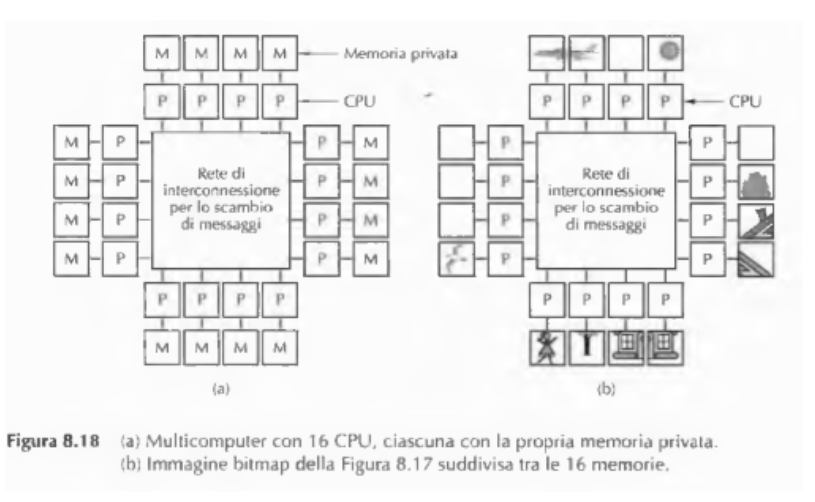
3. SISTEMI DISTRIBUITI
sono computer che lavorano su aree geografiche estese come internet e i messaggi impiegano dai 10 ai 100 ms sono tipo i client e i server 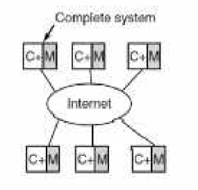
TIPI DI SISTEMI OPERATIVI MULTIPROCESSORE
Ci sono tre approcci per mettere sistemi operativi su multiprocessori:
- ogni cpu ha un suo sistema operativo
- ci sono multiprocessori master e slave
- multiprocessori simmetrici
1. SO per ogni CPU
La memoria è divisa in più partizioni ognuna con il suo SO di ogni CPU ogni CPU lavora totalmente in modo indipendente e ciò genera una scarsa condivisione delle risorse tra le varie CPU 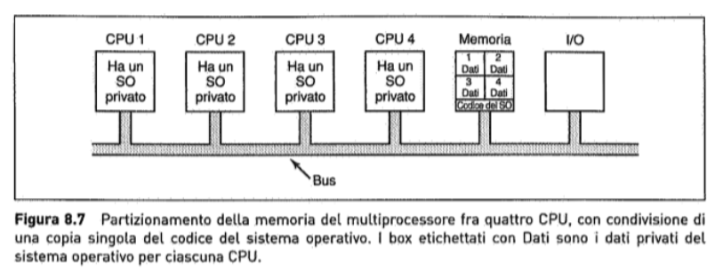
2. Multiprocessori Master-Slave
solo una CPU fa da SO e sfrutta le altre come Slave però il master diventa un collo di bottiglia, perché deve gestire tutte le chiamate di sistema. 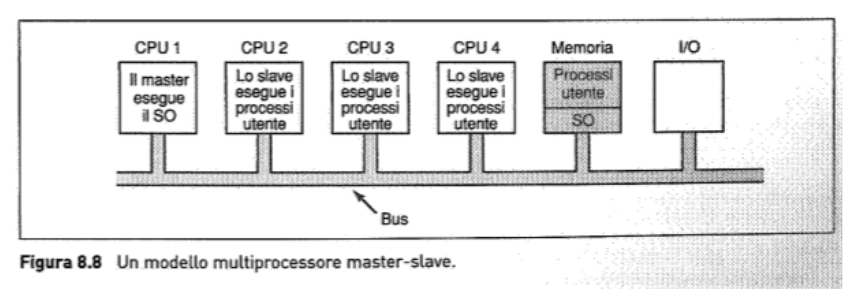
3. Multiprocessori simmetrici
Ogni CPU può diventare Master prendendo il SO dalla memoria solo che le CPU devono essere sincronizzate e bisogna evitare i deadlock(stalli) La CPU che effettua una chiamata di sistema, effettua una trap al kernel(invio di un pacchetto al kernel che aspetta un riscontro) ed elabora la richiesta. 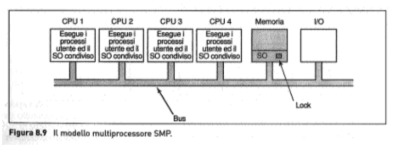
Sincronizzazione dei multiprocessori
Le CPU di un multiprocessore hanno bisogno di sincronizzarsi dovendo proteggere i dati sensibili come database e kernel sfruttando il sistema mutex
mutex
è un meccanismo di sincronizzazione utilizzato nei sistemi multi-thread o multi-processo per impedire che più thread o processi accedano simultaneamente a una risorsa condivisa.
se ad una CPU viene disabilitata la possibilità di attendere interrupt tutte le altre possono comunque farlo il TSL(Test Set Lock) all’interno del mutex permette ad una parola in memoria di essere modificata e controllata con una sola operazione Con più CPU il TSL blocca il bus così che le altre CPU non vi accedono successivamente sblocca il bus
cos'è il kernel?
Il kernel gestisce operazioni come la gestione della memoria, la gestione dei processi, la gestione dei dispositivi di input/output e la gestione delle interruzioni. È essenziale per il funzionamento di qualsiasi sistema operativo, poiché fornisce l’interfaccia tra il software delle applicazioni e l’hardware del computer.